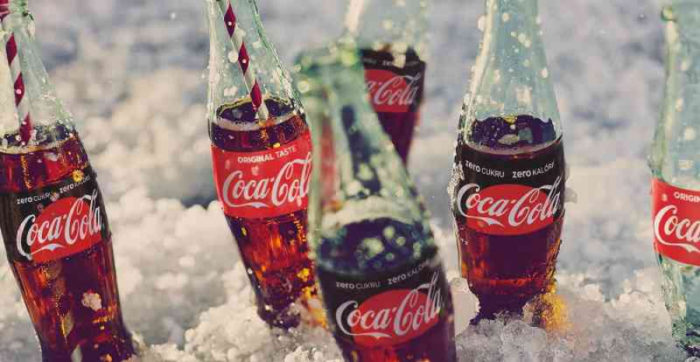

У 1886 році фармацевт з Атланти створив новий вид содової та назавжди змінив світ. У травні Coca-Cola відсвяткує вже свій 133 день народження. За даними NBC News, звичайна та дієтична «Кола» — найпопулярніші газовані напої у США. За цей час бренд Coca-Cola зазнав доволі великих трансформацій. У нашій статті ми проілюструємо вам найяскравіші моменти цього бренду.
Історія заснування бренду Coca-Cola
Компанія Coca-Cola була заснована у 1886 році, коли фармацевт Джон Пембертон (John Stith Pemberton) винайшов новий вид газованого напою. Тоді він коштував всього 5 центів. Одна з найпопулярніших легенд про Coca-Cola — це те, що у ній раніше був кокаїн. Це правда, але у 1905 році цю речовину виключили зі складу напою.

Перші пляшки Coca-Cola з’явилися у 1899 році. У них були металеві кришки. До цього «Колу» можна було придбати лише на спеціальних стійках з газованою водою.
Розвиток бренду Coca-Cola
Через деякий час троє підприємців усього за $1 купили у Кендлера права на виробництво «Коли». Саме завдяки їм з’явилися знамениті пляшки з газованим напоєм. У 1906 році Coca-Cola почала виробляти «Колу» у нових пляшках з оновленим логотипом, аби відрізнятися від напою конкурентів.
Історія пляшок Coca-Cola

Перед самою смертю Пембертона (через 2 роки після того, як було винайдено «Колу»), підприємець Аса Кендлер (Asa Griggs Candler) викупив долю компанії Coca-Cola. Після того, як Пембертона не стало, Кендлер зіграв важливу роль у популяризації напою в країні.

До 1915 року дизайн пляшки став більше нагадувати всіма улюблений варіант. Його запатентувала компанія Root Glass Company. Дизайнери хотіли, аби пляшку популярного напою можна було відрізнити лише по одному дотику.

Знаменита різдвяна реклама Coca-Cola вперше з’явилася у 1920-х роках, назавжди змінивши сприйняття людей Санта-Клауса. За словами представників торгової марки, вони хотіли вкорінити цей персонаж (раніше Санта-Клауса зображали по-різному – наприклад, високим та худим чоловіком або страшкуватим ельфом – ред.).
Рекламна кампанія Coca-Cola
Це зображення Санта-Клаусу намалював ілюстратор Хаддон Сандблом. Його оригінальні масляні портрети цього персонажа використовувались у кожній рекламі Coca-Cola. З того часу Санта-Клаус став невіддільною частиною бренду. У 1920-ті роки «Колу» почали вперше продавати в упаковуванні по шість пляшок. Такий підхід зробив гуртові закупки зручніше та збільшили продажі. А у 1928 році кількість проданої «Коли» в пляшках вперше перевищило кількість продажу на стійках з розливною газованою водою.
У 1950-х роках форма пляшки з «Колою» стала тою самою, яку ми знаємо в сучасному її вигляді. Вона називається «контурною пляшкою». У 1950 році така пляшка з’явилася на обкладинці журналу TIME. Так Coca-Cola стала першим продуктом, яка таким чином закріпила позицію бренду. У 1977 році були зареєстровані права на дизайн контурної пляшки – раніше у відношенні до пакування це було рідкістю. Пластикові пляшки з «Колою» з’явилися тільки через пів століття. У 1993 році компанія заявила, що буде виготовляти напій у такому пакуванні тому, що вона найбільш безпечна для навколишнього середовища. Але тепер ми знаємо, що це зовсім не так. Зараз Coca-Cola активно займається переробленням матеріалів, аби її пластикові пляшки не засмічували навколишнє середовище.
Перша Coca-Cola в алюмінієвій банці з’явилася у 1960 році. На банці був зображений силует пляшки, аби покупці не розгублювалися. Перша банка дуже нагадувала сучасний варіант, але була менш заокругленою.
Банки Coca-Cola
Перша дієтична «Кола» з’явилася у 1982 році. Її склад повністю відрізнялась від оригінального напою.
За 2 роки дієтична «Кола» зайняла третє місце по популярності серед газованих напоїв в США, витіснивши з ринку 7UP. Перше та друге місце зайняли Coca-Cola та Pepsi. Так продовжувалось до 2010 року, а потім дієтична «Кола» піднялася на друге місце. У пляшці «Коли» менше кофеїну, ніж у чашці кави або чаю, але Coca-Cola прагне задовольнити смаки людей, які не споживають кофеїну. У 1982 році PepsiCo випускає газовану воду без кофеїну Pepsi Free. Coca-Cola представила свій варіант у 1983 році. Через успіх дієтичної «Коли», «Коли» без кофеїну, Coca-Cola вирішила проекспериментувати з різними смаками. Декотрі з них стали дуже популярними, наприклад, вишнева «Кола» (перша кола з відмінним від оригіналу смаком). Вперше цей напій з’явився у 1985 році, до цього люди самостійно додавали вишневий сироп до оригінальної версії «Коли». Наразі Coca-Cola Cherry можна купити у 36 країнах.
Але не всі смаки газованого напою сподобалися споживачам. У квітні 1985 року Coca-Cola повідомила, що замінює класичну «Колу» напоєм New Coke. Прихильники «Коли» були обурені, тому у серпні 1985 року Coca-Cola заявила, що поверне класичну версію напою.
Нові смаки Coca-Cola
Після невдачі з New Coke компанія довго не наважувалась вводити нові смаки. Наприклад, «Кола» зі смаком лимону з’явилась лише у 2001 році, після того як Pepsi випустила аналогічний напій під назвою Pepsi Twist. У 2002 році компанія випустила ванільну «Колу» бо покупці вже давно робили свою власну версію такого напою. Але вона швидко зникла з прилавків та її замінила нова Black Cherry Vanilla Coke, яка поєднала два смаки – ванілі та вишні. Відгуки про нову версію напою були змішаними, тому у 2007 році на прохання фанів Coca-Cola, повернула класичну «Колу» з ванільним смаком.
У 2005 році пакування змінилося. Спільно з 5 різними дизайнерськими студіями Coca-Cola випустила обмежений набір пляшок з алюмінію M5 з унікальним дизайном. Вихід кожного нового дизайну супроводжувався музичним кліпом. Стильні пляшки були розраховані для продажу у нічних клубах – малюнок на них світилася у темноті. Декотрі пляшки потім перепродали на сайті eBay за $99.
Алюмінієві пляшки стали настільки популярними, що Coca-Cola вирішила використовувати таке пакування на постійній основі та запустила її у масове виробництво на американському ринку у 2007 році.
У 2000-х з’явилися усім відомі класичні банки з «Колою».
У цілому, сам напій не дуже змінився з 1960-х років. У 2005 році з’явилася альтернатива дієтичної «Коли» – Coke Zero. Там теж не було ні калорій, ні цукру, але за словами представників Coca-Cola, напій за смаком все одно нагадував все ж класичну, а не дієтичну «Колу». У 2016 році Coke Zero змінила назву на Coke Zero Sugar, викликавши неприємні спогади про невдачу з New Coke.
У 2009 році Coca-Cola презентувала новий вигляд пластикових пляшок PlantBottle, на 30% виготовлених з рослин. У 2015 році компанія їх доробила – тепер пляшка повністю вироблена з рослинного матеріалу (спеціальний пластик, отриманий з цукрової тростини). Coca-Cola також повідомила, що до 2020 року збирається повністю перейти на використання таких пляшок.
Майбутні проекти
У тому ж році Coca-Cola представила автомати з газованими напоями Coca-Cola Freestyle, у яких продавалось більше сотні продуктів компанії серед яких можна було знайти таку рідкість, як дієтична малинова «Кола». І найголовніше – покупці могли змішувати різні смаки.
Найбільший редизайн пляшок з «Колою» відбувся у 2013 та 2014 роках, коли була запущена кампанія Share a Coke With, у рамках якої на прилавках стали з’являтися персональні банки та пляшки з іменами.Кампанія діє до сих пір, причому тепер на пляшках можна знайти не лише імена, але й рядки з пісень. Coca-Cola випустила газовану воду у пакуванні з більш, ніж 1000 різних імен, нікнеймів, статусів (наприклад, такі надписи, як «мама» чи «бабуся»), а також словосполучення таке, як «Найкращий тато».
У 2014 році Coca-Cola випустила нову низькокалорійну версію класичного газованого напою Coca-Cola Life. Від дієтичної «Коли» вона відрізнялася тим, що у ньому у якості підсолоджувача використовувався не аспартам, а натуральний екстракт стевії. Напій випускався у зелених банках.
У 2018 році компанія випустила на ринок чотири нових смаки дієтичної «Коли», аби збільшити продажі (з 2005 року вони впали на 34%), а також змінила дизайн алюмінієвої банки.

Зараз Coca-Cola все ще намагається придумати щось нове. Наприклад, у квітні 2018 року в Японії вперше стали продавати заморожену Coca Cola у м’якому пакуванні.